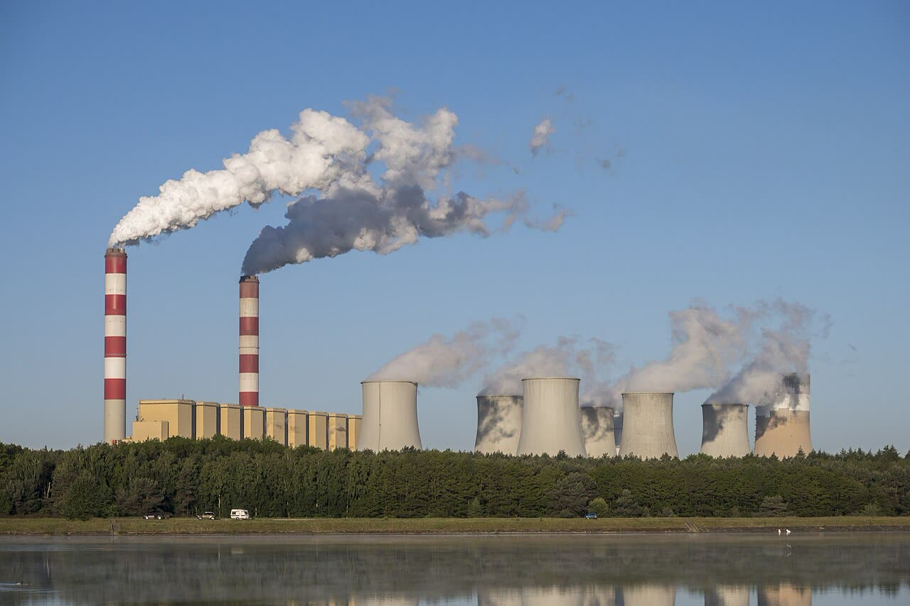

Emissioni fossili, primo calo dal Covid: -0,4% con guerra in Iran e rinnovabili (stima)
Un calo che arriva con il petrolio alle stelle non è una politica climatica: è un conto pagato dai consumatori, e si vedrà quanto vale quando i prezzi scenderanno.
Redazione Contrappunto · aggiornato il 10.11.2026


Ogni anno il Global Carbon Project, una rete internazionale di oltre 140 scienziati coordinata dall'Università di Exeter (Regno Unito), pubblica il Global Carbon Budget: il conto di quanta anidride carbonica (CO2) si emette bruciando petrolio, gas e carbone e quanta ne resta da emettere per non superare 1,5 gradi di riscaldamento. Il 10 novembre, mentre a Antalya (Turchia) si apre la Cop31, la conferenza annuale dell'ONU sul clima, l'edizione 2026 stima che le emissioni da fonti fossili scendano dello 0,4% quest'anno, a 38,2 miliardi di tonnellate. Sarebbe il primo calo dal 2020, l'anno dei lockdown. Quest'anno il rapporto lega il calo alla guerra in Iran (la chiusura dello stretto di Hormuz ha fatto salire i prezzi del petrolio) e alla crescita di solare ed eolico.
Vedi di più: 4 parole spiegate, cosa si racconta
Cosa si raccontaFrance 24 e Japan Times, che pubblicano lo stesso lancio dell'agenzia AFP, titolano sul «primo calo dal Covid» e dicono che a spingerlo sono insieme le rinnovabili e lo shock petrolifero. Gizmodo e SaurEnergy mettono l'accento sul prezzo: per Gizmodo è un «short-term blip», per SaurEnergy a produrre il calo è l'interruzione delle forniture più che la politica climatica. Per tutti il calo potrebbe non durare. Il dato che manca nella maggior parte dei titoli: il carbone cresce dello 0,6%. [Global Carbon Project] [France 24] [The Japan Times] [Gizmodo] [SaurEnergy]
- Global Carbon Project
- Rete di ricercatori di oltre 90 istituzioni, con l'Università di Exeter e l'Università dell'East Anglia (UEA) tra i promotori: ogni anno stima le emissioni di CO2 del pianeta (comunicato del rapporto).
- Bilancio di carbonio (carbon budget)
- La quantità di CO2 che si può ancora emettere prima che il riscaldamento superi 1,5 °C rispetto all'era preindustriale: ora 150 miliardi di tonnellate, meno di quattro anni alle emissioni attuali (comunicato).
- Stretto di Hormuz
- Passaggio tra Iran e Oman da cui transitano circa 20 milioni di barili di petrolio al giorno, un quarto del petrolio trasportato via mare; la guerra ha causato la più grande interruzione delle forniture nella storia del mercato (Gizmodo).
- Cop31
- La 31ª conferenza dell'ONU sul clima, a Antalya, in Turchia (France 24, Japan Times).
- Il Global Carbon Budget 2026 stima un calo dello 0,4% delle emissioni fossili di CO2, a 38,2 miliardi di tonnellate: il primo dal 2020 (comunicato del Global Carbon Project, France 24).
- Il petrolio scende dell'1,9%, il gas dello 0,3%, il carbone sale dello 0,6%; gli autori attribuiscono il calo a solare ed eolico e al conflitto in Iran, e avvertono che può essere di breve durata (comunicato, Gizmodo).
France 24 e Japan Times, con lo stesso lancio AFP, titolano sul primo calo dal Covid, dovuto a rinnovabili e shock petrolifero insieme. Gizmodo e SaurEnergy spostano il peso sul prezzo: per Robbie Andrew, coautore, è un «short-term blip» e il motore principale sono le strozzature dell'offerta in Medio Oriente. È la differenza che conta. Il petrolio scende dell'1,9%, il carbone sale dello 0,6%: a muovere il conto è stata una guerra, non una legge. Chi ha consumato meno perché costava di più, quel calo l'ha pagato in bolletta. Per noi la prova viene quando i prezzi tornano giù: lì si vede quale tecnologia regge senza sussidi e senza crisi, nucleare compreso. [2] [3] [4] [5] [1]
La verifica punto per punto3 passaggi, 5 fonti
Qui sotto ogni cosa scritta sopra, una per una, con le fonti. Confermato: lo dice un documento originale o più fonti lette. Plausibile: lo riportano fonti serie, ma non abbiamo letto l'originale. Discordante: le fonti danno numeri diversi, e diciamo quali. Ipotesi e Opinione sono il nostro ragionamento, separato dai fatti.
Cosa dice il rapporto
Il Global Carbon Budget 2026 proietta emissioni fossili di CO2 per 38,2 miliardi di tonnellate, -0,4% sul 2025: il primo calo annuale dal 2020. Nel decennio erano cresciute in media dello 0,9% l'anno, con un record nel 2025 (France 24, Japan Times). Petrolio -1,9%, gas -0,3%, carbone +0,6%. Con le emissioni da uso del suolo (deforestazione, incendi di torbiere) il totale sale da 42,8 a 43,3 miliardi di tonnellate (comunicato, Gizmodo). Per paese: Cina -0,9%, Stati Uniti -1,3%, Unione europea -1,5%, Giappone -1%, India +4,4%; la Cina produce il 32% delle emissioni fossili mondiali (comunicato). Due terzi della crescita della domanda di energia sono coperti da solare, eolico e auto elettriche (comunicato). Il rapporto è un pre-print della rivista Earth System Science Data, non ancora rivisto da altri studiosi (comunicato).
Quanto pesa la guerra, quanto le rinnovabili
Gli autori non pesano allo stesso modo le due cause. Il comunicato mette insieme solare, eolico e conflitto in Iran, e dice che il calo del petrolio è probabilmente una risposta di breve periodo. Per Friedlingstein una riduzione guidata in parte da shock geopolitici non è una soluzione climatica sostenibile. Per Robbie Andrew, coautore, il motore principale sono le strozzature dell'offerta in Medio Oriente, un «short-term blip», anche se senza i nuovi impianti rinnovabili il calo probabilmente non ci sarebbe stato (Gizmodo). Glen Peters ricorda che un calo in un anno non è un picco, se non nasce da un cambiamento strutturale (comunicato). Nessuna fonte letta dà una quota in percentuale tra le due cause.
Il nostro punto
Il calo viene almeno in parte dai prezzi, e un calo dai prezzi non è una politica. Lo paga chi consuma di meno perché il carburante costa di più, e svanisce quando costa meno. Il test onesto arriva dopo: gli obiettivi si fissano, poi ogni tecnologia compete, nucleare incluso, senza sussidi verdi e senza una guerra a dare una mano. Che solare ed eolico coprano due terzi della nuova domanda di energia è un buon segno, ma resta da vedere cosa succede quando il petrolio torna a costare poco.
Fonti5, tutte con il link
- Global Carbon Project, Fossil CO2 emissions decrease in 2026 (comunicato del Global Carbon Budget 2026, 10 novembre 2026) (Global Carbon Project) · consultata il 10.11.2026
- Fossil fuel emissions set to fall for first time since Covid, research shows (10 novembre 2026) (France 24) · consultata il 10.11.2026
- Fossil fuel emissions fall due to Iran war and renewables, research shows (AFP-Jiji, 10 novembre 2026) (The Japan Times) · consultata il 10.11.2026
- Global Fossil Fuel Emissions Fell in 2026 (10 novembre 2026) (Gizmodo) · consultata il 10.11.2026
- COP31: Global Fossil Fuel Emissions Set to Fall, But Is the Energy Transition Getting the Credit? (10 novembre 2026) (SaurEnergy) · consultata il 10.11.2026
Testo preparato con strumenti di intelligenza artificiale e pubblicato senza revisione umana. Come lavoriamo